<!DOCTYPE html>
<html lang="ru_RU">
  <head>
    <meta charset="utf-8">
    <meta name="viewport" content="width=device-width, initial-scale=1, minimal-ui">
    <meta http-equiv="X-UA-Compatible" content="IE=edge">
    <meta name="imagetoolbar" content="no">
    <meta name="msthemecompatible" content="no">
    <meta name="cleartype" content="on">
    <meta name="HandheldFriendly" content="True">
    <meta name="google" value="notranslate">
    <meta name="description" content="">
    <meta name="keywords" content="">
    <link rel="shortcut icon" type="image/png" href="img/favicon.ico">
    <link rel="stylesheet" href="https://cdnjs.cloudflare.com/ajax/libs/flexboxgrid/6.3.1/flexboxgrid.min.css">
    <link rel="stylesheet" type="text/css" href="css/style.css" media="screen, projection, print">
    <link href="https://fonts.googleapis.com/css?family=Roboto:100,300,400,500,700&amp;amp;subset=cyrillic" rel="stylesheet">
    <link rel="stylesheet" href="https://cdnjs.cloudflare.com/ajax/libs/OwlCarousel2/2.2.1/assets/owl.carousel.min.css">
    <link rel="stylesheet" href="https://cdnjs.cloudflare.com/ajax/libs/OwlCarousel2/2.2.1/assets/owl.theme.default.min.css">
    <script src="https://cdnjs.cloudflare.com/ajax/libs/jquery/3.1.1/jquery.min.js"></script>
    <script>
      jQuery(document).ready(function($) {
      	$('.owl-carousel').owlCarousel({
      		items:1,
      		loop:true,
      		nav:true,
      		center:true,
      		margin:10,
      		URLhashListener:true,
      		autoplayHoverPause:true,
      		startPosition: 'URLHash'
      	});
      });
      
      
    </script>
    <title>TITLE</title>
    <!-- Google Tag Manager-->
    <script>
      (function(w,d,s,l,i){w[l]=w[l]||[];w[l].push({'gtm.start':
      new Date().getTime(),event:'gtm.js'});var f=d.getElementsByTagName(s)[0],
      j=d.createElement(s),dl=l!='dataLayer'?'&l='+l:'';j.async=true;j.src=
      'https://www.googletagmanager.com/gtm.js?id='+i+dl;f.parentNode.insertBefore(j,f);
      })(window,document,'script','dataLayer','GTM-B5CM');
    </script>
    <!-- End Google Tag Manager-->
    <!-- Google Tag Manager (noscript)-->
    <noscript>
      <iframe src="https://www.googletagmanager.com/ns.html?id=GTM-B5CM" height="0" width="0" style="display:none;visibility:hidden;"></iframe>
    </noscript>
    <!-- End Google Tag Manager (noscript)-->
  </head>
</html>
<body>
  <header class="header">
    <div class="container">
      <div class="header-wrap"><a class="header-logo" href="https://www.ulmart.ru/" target="_blank"></a>
        <div class="header-text_wrap">
          <h1 class="header-text_title">Важные аксессуары для идеальных поездок</h1>
          <p class="header-text_desc">Мало выбрать хороший велосипед — нужно подготовить его к любым сюрпризам на дороге. Чтобы любая ваша поездка доставляла максимум удовольствия и минимум проблем, рассказываем о самых нужных велосипедных аксессуарах. Прокачайте своего железного друга — и вперёд, к приключениям!</p>
        </div>
      </div>
    </div>
  </header>
  <section class="bicycle">
    <div class="container">
      <div class="row">
        <div class="col-xs-12 col-sm-7">
          <div class="bicycle-btn_wrap">
            <button class="bicycle-btn tab">Аксессуары</button>
            <button class="bicycle-btn tab2">Экипировка</button>
            <button class="bicycle-btn active-b tab3">Запчасти</button>
          </div>
          <div class="bicycle-wrap">
            <div class="bicycle-accessories none"><a class="bicycle-ico url" href="#1"></a><a class="bicycle-ico url" href="#2"></a><a class="bicycle-ico url" href="#3"></a><a class="bicycle-ico url" href="#4"></a><a class="bicycle-ico url" href="#5"></a><a class="bicycle-ico url" href="#6"></a><a class="bicycle-ico url" href="#7"></a><a class="bicycle-ico url" href="#8"></a><a class="bicycle-ico url" href="#9"></a><a class="bicycle-ico url" href="#10"></a><a class="bicycle-ico url" href="#11"></a><a class="bicycle-ico url" href="#12"></a>
            </div>
            <div class="bicycle-equipment none"><a class="bicycle-ico url" href="#13"></a><a class="bicycle-ico url" href="#14"></a><a class="bicycle-ico url" href="#15"></a><a class="bicycle-ico url" href="#16"></a><a class="bicycle-ico url" href="#17"></a><a class="bicycle-ico url" href="#18"></a><a class="bicycle-ico url" href="#19"></a><a class="bicycle-ico url" href="#20"></a><a class="bicycle-ico url" href="#21"></a><a class="bicycle-ico url" href="#22"></a><a class="bicycle-ico url" href="#23"></a><a class="bicycle-ico url" href="#24"></a><a class="bicycle-ico url" href="#25"></a>
            </div>
            <div class="bicycle-parts tab3"><a class="bicycle-ico url" href="#26"></a><a class="bicycle-ico url" href="#27"></a><a class="bicycle-ico url" href="#28"></a><a class="bicycle-ico url" href="#29"></a><a class="bicycle-ico url" href="#30"></a><a class="bicycle-ico url" href="#31"></a>
            </div>
          </div>
        </div>
        <div class="col-xs-12 col-sm-5">
          <div class="owl-carousel owl-theme" style="max-width: 360px;margin: 0 auto;">
            <div class="item" data-hash="1">
              <p class="carousel-counter">Велоаксессуары <span><b>1</b> / <small>31</small></span></p><a href="http://www.ulmart.ru/catalog/93234_21246_251878?sort=0&amp;viewType=1&amp;rec=true">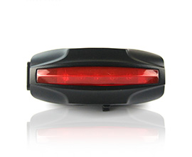</a>
              <h4 class="carousel-title"> GPS-трекер</h4>
              <p class="carousel-text"> Для поиска велосипеда в случае угона. Встроенный GPS-трекер позволит зафиксировать и отследить местоположение велосипеда.</p><a class="carousel-btn" href="http://www.ulmart.ru/catalog/93234_21246_251878?sort=0&amp;viewType=1&amp;rec=true" target="_blank">Выбрать gps-трекер</a>
            </div>
            <div class="item" data-hash="2">
              <p class="carousel-counter">Велоаксессуары <span><b>2</b> / <small>31</small></span></p><a href="http://www.ulmart.ru/catalog/veloinstrumenty_1">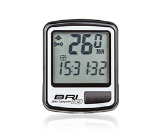</a>
              <h4 class="carousel-title"> Велоинструмент</h4>
              <p class="carousel-text"> Для ремонта и настройки велосипеда. Благодаря компактным размерам и малому весу занимает минимум пространства при хранении и транспортировке.</p><a class="carousel-btn" href="http://www.ulmart.ru/catalog/veloinstrumenty_1" target="_blank">Выбрать велоинструменты</a>
            </div>
            <div class="item" data-hash="3">
              <p class="carousel-counter">Велоаксессуары <span><b>3</b> / <small>31</small></span></p><a href="http://www.ulmart.ru/catalog/93234_21246_206146"></a>
              <h4 class="carousel-title"> Велокомпьютер</h4>
              <p class="carousel-text"> Для отслеживания скорости, дистанции, общего пробега и времени поездки. Состоит из двух частей соединенных проводом - дисплея, который крепится на руле и датчика скорости.</p><a class="carousel-btn" href="http://www.ulmart.ru/catalog/93234_21246_206146" target="_blank">Выбрать велокомпьютеры</a>
            </div>
            <div class="item" data-hash="4">
              <p class="carousel-counter">Велоаксессуары <span><b>4</b> / <small>31</small></span></p><a href="http://www.ulmart.ru/catalog/velokresla_1?sort=0&amp;viewType=1&amp;rec=true">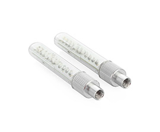</a>
              <h4 class="carousel-title"> Велокресло</h4>
              <p class="carousel-text"> Для комфортных поездок с ребёнком. Эргономичная конструкция позволяет малышу максимально расслабиться, а заботливых родителей избавляя от лишних переживаний за его состояние.</p><a class="carousel-btn" href="http://www.ulmart.ru/catalog/velokresla_1?sort=0&amp;viewType=1&amp;rec=true" target="_blank">Выбрать велокресло</a>
            </div>
            <div class="item" data-hash="5">
              <p class="carousel-counter">Велоаксессуары <span><b>5</b> / <small>31</small></span></p><a href="http://www.ulmart.ru/catalog/93234_21246_246951?sort=0&amp;viewType=1&amp;rec=true">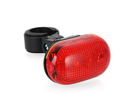</a>
              <h4 class="carousel-title"> Дополнительное освещение</h4>
              <p class="carousel-text"> Для стильных и безопасных ночных поездок. Состоит из двух небольших фонариков, которые устанавливаются на ниппель колеса, вместо колпачка.</p><a class="carousel-btn" href="http://www.ulmart.ru/catalog/93234_21246_246951?sort=0&amp;viewType=1&amp;rec=true" target="_blank">Выбрать дополнительное освещение</a>
            </div>
            <div class="item" data-hash="6">
              <p class="carousel-counter">Велоаксессуары <span><b>6</b> / <small>31</small></span></p><a href="http://www.ulmart.ru/catalog/93234_21246_239873?sort=0&amp;viewType=1&amp;rec=true">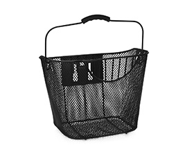</a>
              <h4 class="carousel-title"> Задний фонарь</h4>
              <p class="carousel-text"> Для поездок по автомобильной части. Фонарь легко крепится под седло с помощью универсального хомута и работает режимах: постоянное освещение, мигание.</p><a class="carousel-btn" href="http://www.ulmart.ru/catalog/93234_21246_239873?sort=0&amp;viewType=1&amp;rec=true" target="_blank">Выбрать задний фонарь</a>
            </div>
            <div class="item" data-hash="7">
              <p class="carousel-counter">Велоаксессуары <span><b>7</b> / <small>31</small></span></p><a href="http://www.ulmart.ru/catalog/93234_21246_295547">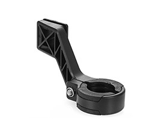</a>
              <h4 class="carousel-title"> Корзина</h4>
              <p class="carousel-text"> Для удобной транспортировки важных мелочей. Вместительная корзина предназначена для установки на велосипеде.</p><a class="carousel-btn" href="http://www.ulmart.ru/catalog/93234_21246_295547" target="_blank">Выбрать корзину</a>
            </div>
            <div class="item" data-hash="8">
              <p class="carousel-counter">Велоаксессуары <span><b>8</b> / <small>31</small></span></p><a href="http://www.ulmart.ru/catalog/93234_21246_184917?sort=0&amp;viewType=1&amp;rec=true">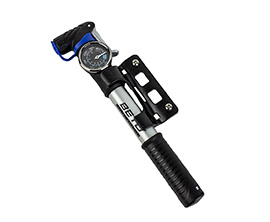</a>
              <h4 class="carousel-title"> Крепление</h4>
              <p class="carousel-text"> Для удобной работы со смартфоном или экшн-камерой даже во время поездки. Крепление четко фиксирует гаджет в любых дорожных условиях.</p><a class="carousel-btn" href="http://www.ulmart.ru/catalog/93234_21246_184917?sort=0&amp;viewType=1&amp;rec=true" target="_blank">Выбрать крепление</a>
            </div>
            <div class="item" data-hash="9">
              <p class="carousel-counter">Велоаксессуары <span><b>9</b> / <small>31</small></span></p><a href="http://www.ulmart.ru/catalog/93234_21246_192282">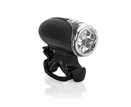</a>
              <h4 class="carousel-title"> Насос</h4>
              <p class="carousel-text"> Для путешествий без проколов. Поможет с легкостью накачать камеру колеса.</p><a class="carousel-btn" href="http://www.ulmart.ru/catalog/93234_21246_192282" target="_blank">Выбрать насос</a>
            </div>
            <div class="item" data-hash="10">
              <p class="carousel-counter">Велоаксессуары <span><b>10</b> / <small>31</small></span></p><a href="http://www.ulmart.ru/catalog/93234_21246_192279">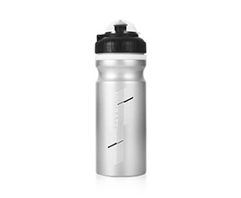</a>
              <h4 class="carousel-title"> Передний фонарь</h4>
              <p class="carousel-text"> Для безопасных поездок в темноте. С легкостью крепится на руль велосипеда без специальных инструментов и работает в двух режимах: освещение и мигание.</p><a class="carousel-btn" href="http://www.ulmart.ru/catalog/93234_21246_192279" target="_blank">Выбрать передний фонарь</a>
            </div>
            <div class="item" data-hash="11">
              <p class="carousel-counter">Велоаксессуары <span><b>11</b> / <small>31</small></span></p><a href="http://www.ulmart.ru/catalog/93234_21246_192010">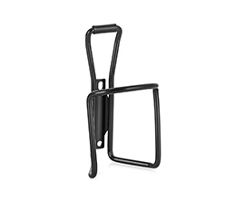</a>
              <h4 class="carousel-title"> Фляга</h4>
              <p class="carousel-text"> Для борьбы с жаждой. Бутылка для воды и напитков удобно фиксируется в универсальный велосипедный держатель.</p><a class="carousel-btn" href="http://www.ulmart.ru/catalog/93234_21246_192010" target="_blank">Выбрать флягу</a>
            </div>
            <div class="item" data-hash="12">
              <p class="carousel-counter">Велоаксессуары <span><b>12</b> / <small>31</small></span></p><a href="http://www.ulmart.ru/catalog/93234_21246_236204?sort=0&amp;viewType=1&amp;rec=true">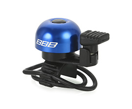</a>
              <h4 class="carousel-title"> Флягодержатель</h4>
              <p class="carousel-text"> Для надёжной фиксации фляги. Устанавливается в штатное место на раме велосипеда.</p><a class="carousel-btn" href="http://www.ulmart.ru/catalog/93234_21246_236204?sort=0&amp;viewType=1&amp;rec=true" target="_blank">Выбрать флягодержатель</a>
            </div>
            <div class="item" data-hash="13">
              <p class="carousel-counter">Велоаксессуары <span><b>13</b> / <small>31</small></span></p><a href="http://www.ulmart.ru/catalog/95307_27398_240207?sort=0&amp;viewType=1&amp;rec=true">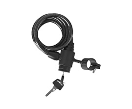</a>
              <h4 class="carousel-title"> Багажник</h4>
              <p class="carousel-text"> Для долгих поездок. С легкостью устанавливается на заднюю часть рамы.</p><a class="carousel-btn" href="http://www.ulmart.ru/catalog/95307_27398_240207?sort=0&amp;viewType=1&amp;rec=true" target="_blank">Выбрать багажник</a>
            </div>
            <div class="item" data-hash="14">
              <p class="carousel-counter">Велоаксессуары <span><b>14</b> / <small>31</small></span></p><a href="http://www.ulmart.ru/catalog/95307_27398_307098?sort=0&amp;viewType=1&amp;rec=true">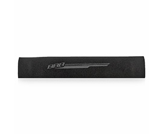</a>
              <h4 class="carousel-title"> Выносы</h4>
              <p class="carousel-text"> Для удобства езды, скорости и сокращения лобового сопротивления. Можно направлять вверх или опускать вниз.</p><a class="carousel-btn" href="http://www.ulmart.ru/catalog/95307_27398_307098?sort=0&amp;viewType=1&amp;rec=true" target="_blank">Выбрать выносы</a>
            </div>
            <div class="item" data-hash="15">
              <p class="carousel-counter">Велоаксессуары <span><b>15</b> / <small>31</small></span></p><a href="http://www.ulmart.ru/catalog/95307_27398_237868?sort=0&amp;viewType=1&amp;rec=true">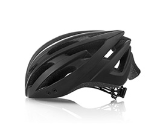</a>
              <h4 class="carousel-title"> Грипсы</h4>
              <p class="carousel-text"> Для хорошего сцепления и надёжного хвата. Выполнены из высококачественного износостойкого материала.</p><a class="carousel-btn" href="http://www.ulmart.ru/catalog/95307_27398_237868?sort=0&amp;viewType=1&amp;rec=true" target="_blank">Выбрать грипсы</a>
            </div>
            <div class="item" data-hash="16">
              <p class="carousel-counter">Велоаксессуары <span><b>16</b> / <small>31</small></span></p><a href="http://www.ulmart.ru/catalog/velozapcasti_1_21246_202340?sort=0&amp;viewType=1&amp;rec=true">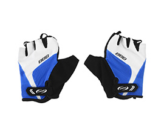</a>
              <h4 class="carousel-title"> Звонок</h4>
              <p class="carousel-text"> Для общения с другими участниками движения. Станет отличным дополнением для велосипеда, сделав его более заметным.</p><a class="carousel-btn" href="http://www.ulmart.ru/catalog/velozapcasti_1_21246_202340?sort=0&amp;viewType=1&amp;rec=true" target="_blank">Выбрать звонок</a>
            </div>
            <div class="item" data-hash="17">
              <p class="carousel-counter">Велоаксессуары <span><b>17</b> / <small>31</small></span></p><a href="http://www.ulmart.ru/catalog/95307_27398_237288?sort=0&amp;viewType=1&amp;rec=true">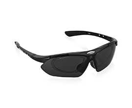</a>
              <h4 class="carousel-title"> Камера</h4>
              <p class="carousel-text"> Для устойчивых и упругих покрышек. Камера удерживает воздух в колесе, поддерживает покрышку, придает ей форму.</p><a class="carousel-btn" href="http://www.ulmart.ru/catalog/95307_27398_237288?sort=0&amp;viewType=1&amp;rec=true" target="_blank">Выбрать камеру</a>
            </div>
            <div class="item" data-hash="18">
              <p class="carousel-counter">Велоаксессуары <span><b>18</b> / <small>31</small></span></p><a href="http://www.ulmart.ru/catalog/95307_27398_237751?sort=0&amp;viewType=1&amp;rec=true"></a>
              <h4 class="carousel-title"> Крылья</h4>
              <p class="carousel-text"> Для защиты от грязи и камней, вылетающих из-под колёс. Они с легкостью устанавливается с помощью универсальных креплений, и гарантируют надежную фиксацию.</p><a class="carousel-btn" href="http://www.ulmart.ru/catalog/95307_27398_237751?sort=0&amp;viewType=1&amp;rec=true" target="_blank">Выбрать крылья</a>
            </div>
            <div class="item" data-hash="19">
              <p class="carousel-counter">Велоаксессуары <span><b>19</b> / <small>31</small></span></p><a href="http://www.ulmart.ru/catalog/95307_27398_310467?sort=0&amp;viewType=1&amp;rec=true">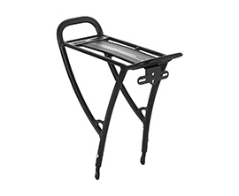</a>
              <h4 class="carousel-title"> Накладка на седло</h4>
              <p class="carousel-text"> Для комфортной и безболезненной езды как при коротких поездках в черте города, так и в длительных марафонах за его пределами.</p><a class="carousel-btn" href="http://www.ulmart.ru/catalog/95307_27398_310467?sort=0&amp;viewType=1&amp;rec=true" target="_blank">Выбрать накладку на седло</a>
            </div>
            <div class="item" data-hash="20">
              <p class="carousel-counter">Велоаксессуары <span><b>20</b> / <small>31</small></span></p><a href="http://www.ulmart.ru/catalog/95307_27398_310345?sort=0&amp;viewType=1&amp;rec=true">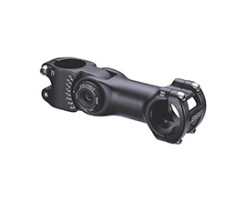</a>
              <h4 class="carousel-title"> Педали</h4>
              <p class="carousel-text"> Для эффективной езды. Именно благодаря им и их регулярным вращательным движениям велосипед может ехать вперед.</p><a class="carousel-btn" href="http://www.ulmart.ru/catalog/95307_27398_310345?sort=0&amp;viewType=1&amp;rec=true" target="_blank">Выбрать педали</a>
            </div>
            <div class="item" data-hash="21">
              <p class="carousel-counter">Велоаксессуары <span><b>21</b> / <small>31</small></span></p><a href="http://www.ulmart.ru/catalog/95307_27398_237792?sort=0&amp;viewType=1&amp;rec=true">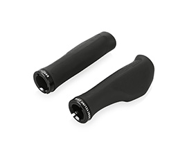</a>
              <h4 class="carousel-title"> Подножка</h4>
              <p class="carousel-text"> Для устойчивой парковки. Она с легкостью устанавливается с помощью крепежного винта, что гарантирует надежную фиксацию.</p><a class="carousel-btn" href="http://www.ulmart.ru/catalog/95307_27398_237792?sort=0&amp;viewType=1&amp;rec=true" target="_blank">Выбрать подножку</a>
            </div>
            <div class="item" data-hash="22">
              <p class="carousel-counter">Велоаксессуары <span><b>22</b> / <small>31</small></span></p><a href="http://www.ulmart.ru/catalog/velozapcasti_1_27398_376531?sort=0&amp;viewType=1&amp;rec=true">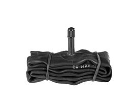</a>
              <h4 class="carousel-title"> Покрышки</h4>
              <p class="carousel-text"> Для идеального контакта с дорогой. Влияет на поведение велосипеда на дороге больше, чем любая другая его деталь.</p><a class="carousel-btn" href="http://www.ulmart.ru/catalog/velozapcasti_1_27398_376531?sort=0&amp;viewType=1&amp;rec=true" target="_blank">Выбрать покрышки</a>
            </div>
            <div class="item" data-hash="23">
              <p class="carousel-counter">Велоаксессуары <span><b>23</b> / <small>31</small></span></p><a href="http://www.ulmart.ru/catalog/95307_27398_235123?sort=0&amp;viewType=1&amp;rec=true">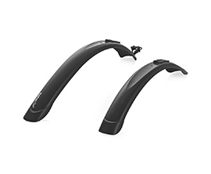</a>
              <h4 class="carousel-title"> Седло</h4>
              <p class="carousel-text"> Для максимального комфорта во время поездок на короткие и длинные дистанции. Снижать нагрузку на чувствительные места.</p><a class="carousel-btn" href="http://www.ulmart.ru/catalog/95307_27398_235123?sort=0&amp;viewType=1&amp;rec=true" target="_blank">Выбрать седло</a>
            </div>
            <div class="item" data-hash="24">
              <p class="carousel-counter">Велоаксессуары <span><b>24</b> / <small>31</small></span></p><a href="http://www.ulmart.ru/catalog/velozapcasti_1_27398_307099">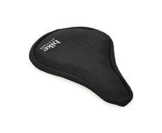</a>
              <h4 class="carousel-title"> Тормозная система</h4>
              <p class="carousel-text"> Для эффективного торможения при любых погодных условиях. Качественное устройство, влияющее на безопасность движения.</p><a class="carousel-btn" href="http://www.ulmart.ru/catalog/velozapcasti_1_27398_307099" target="_blank">Выбрать тормозную система</a>
            </div>
            <div class="item" data-hash="25">
              <p class="carousel-counter">Велоаксессуары <span><b>25</b> / <small>31</small></span></p><a href="http://www.ulmart.ru/catalog/velozapcasti_1_27398_389466?sort=0&amp;viewType=1&amp;rec=true">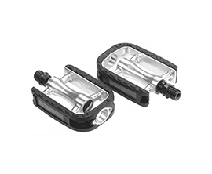</a>
              <h4 class="carousel-title"> Цепь</h4>
              <p class="carousel-text"> Для надежного вращения колес. Внешняя ширина цепи тем меньше, чем больше звёзд в кассете.</p><a class="carousel-btn" href="http://www.ulmart.ru/catalog/velozapcasti_1_27398_389466?sort=0&amp;viewType=1&amp;rec=true" target="_blank">Выбрать цепь</a>
            </div>
            <div class="item" data-hash="26">
              <p class="carousel-counter">Велоаксессуары <span><b>26</b> / <small>31</small></span></p><a href="http://www.ulmart.ru/catalog/veloslemy_1">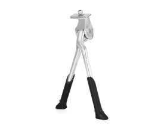</a>
              <h4 class="carousel-title"> Велошлем</h4>
              <p class="carousel-text"> Для надёжной и эффективной защиты от травм. Удобная система фиксации позволяет легко надевать шлем, а съемная подкладка гарантирует максимально комфортное использовани.</p><a class="carousel-btn" href="http://www.ulmart.ru/catalog/veloslemy_1" target="_blank">Выбрать велошлем</a>
            </div>
            <div class="item" data-hash="27">
              <p class="carousel-counter">Велоаксессуары <span><b>27</b> / <small>31</small></span></p><a href="https://www.ulmart.ru/catalog/zasita_slemy_nakolenniki_nalokotniki_naladonniki_1?sort=0&amp;viewType=1&amp;rec=true">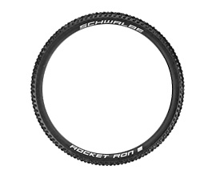</a>
              <h4 class="carousel-title"> Детская защита</h4>
              <p class="carousel-text"> Для безопасного и активного отдыха. Плотно облегает, удобно и быстро надевается и снимается.</p><a class="carousel-btn" href="https://www.ulmart.ru/catalog/zasita_slemy_nakolenniki_nalokotniki_naladonniki_1?sort=0&amp;viewType=1&amp;rec=true" target="_blank">Выбрать детскую защиту</a>
            </div>
            <div class="item" data-hash="28">
              <p class="carousel-counter">Велоаксессуары <span><b>28</b> / <small>31</small></span></p><a href="http://www.ulmart.ru/catalog/93234_21246_227735?sort=0&amp;viewType=1&amp;rec=true">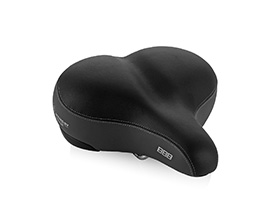</a>
              <h4 class="carousel-title"> Перчатки</h4>
              <p class="carousel-text"> Для надёжного захвата руля. Выполнены из высококачественных материалов и оснащены вентиляционными отверстиями, что предотвращает потоотделение.</p><a class="carousel-btn" href="http://www.ulmart.ru/catalog/93234_21246_227735?sort=0&amp;viewType=1&amp;rec=true" target="_blank">Выбрать перчатки</a>
            </div>
            <div class="item" data-hash="29">
              <p class="carousel-counter">Велоаксессуары <span><b>29</b> / <small>31</small></span></p><a href="http://www.ulmart.ru/search?string=%D0%BE%D1%87%D0%BA%D0%B8&amp;rootCategory=93554&amp;sort=6&amp;category=97861">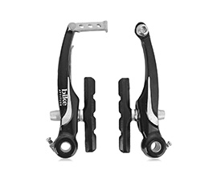</a>
              <h4 class="carousel-title"> Спортивные очки</h4>
              <p class="carousel-text"> Для защиты от солнечных лучей и ярких бликов, возникающих в солнечную погоду. Глаза больше не будут уставать, фокусируясь на засвеченных объектах.</p><a class="carousel-btn" href="http://www.ulmart.ru/search?string=%D0%BE%D1%87%D0%BA%D0%B8&amp;rootCategory=93554&amp;sort=6&amp;category=97861" target="_blank">Выбрать спортивные очки</a>
            </div>
            <div class="item" data-hash="30">
              <p class="carousel-counter">Велоаксессуары <span><b>30</b> / <small>31</small></span></p><a href="http://www.ulmart.ru/catalog/93234_21246_184772?sort=0&amp;viewType=1&amp;rec=true">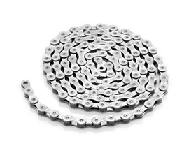</a>
              <h4 class="carousel-title"> Сумка</h4>
              <p class="carousel-text"> Для хранения важных мелочей. Фиксируется с помощью специального крепления под седло велосипеда.</p><a class="carousel-btn" href="http://www.ulmart.ru/catalog/93234_21246_184772?sort=0&amp;viewType=1&amp;rec=true" target="_blank">Выбрать сумку</a>
            </div>
            <div class="item" data-hash="31">
              <p class="carousel-counter">Велоаксессуары <span><b>31</b> / <small>31</small></span></p><a href="http://www.ulmart.ru/catalog/93234_21246_184917"></a>
              <h4 class="carousel-title"> Чехол для телефона</h4>
              <p class="carousel-text"> Для защиты телефона в дождливую погоду. Устанавливается в вертикальном или горизонтальном положении.</p><a class="carousel-btn" href="http://www.ulmart.ru/catalog/93234_21246_184917" target="_blank">Выбрать чехол для телефона</a>
            </div>
          </div>
        </div>
      </div>
    </div>
  </section>
  <section class="help">
    <div class="container">
      <div class="row">
        <div class="col-xs-12 col-sm-9">
          <h3 class="help-title">Ещё не подобрали себе велосипед?  <small class="help-title_small">Отправьте ваши пожелания и мы подберем его для вас!</small></h3>
        </div>
        <div class="col-xs-12 col-sm-3"><a class="help-btn" href="#">Отправить</a></div>
      </div>
    </div>
  </section>
  <section class="access">
    <div class="container">
      <h2 class="access-title">Дополнительные аксессуары</h2>
      <div class="row">
        <div class="col-xs-12 col-sm-6 col-md-3">
          <div class="access-card"><a href="http://www.ulmart.ru/catalog/velozapcasti_1_27398_376758"></a>
            <h3 class="access-card_title">Уход за велосипедом</h3><a class="access-card_btn" href="http://www.ulmart.ru/catalog/velozapcasti_1_27398_376758">Выбрать</a>
          </div>
        </div>
        <div class="col-xs-12 col-sm-6 col-md-3">
          <div class="access-card"><a href="http://www.ulmart.ru/catalog/veloaksessuary_1_21246_401055"></a>
            <h3 class="access-card_title">Велоаптечка</h3><a class="access-card_btn" href="http://www.ulmart.ru/catalog/veloaksessuary_1_21246_401055">Выбрать</a>
          </div>
        </div>
        <div class="col-xs-12 col-sm-6 col-md-3">
          <div class="access-card"><a href="http://www.ulmart.ru/catalog/93234_21246_236194"></a>
            <h3 class="access-card_title">Замок</h3><a class="access-card_btn" href="http://www.ulmart.ru/catalog/93234_21246_236194">Выбрать</a>
          </div>
        </div>
        <div class="col-xs-12 col-sm-6 col-md-3">
          <div class="access-card"><a href="http://www.ulmart.ru/catalog/kreplenia_dla_velosipedov_1?sort=0&amp;viewType=1&amp;rec=true"></a>
            <h3 class="access-card_title">Крепление для велосипеда</h3><a class="access-card_btn" href="http://www.ulmart.ru/catalog/kreplenia_dla_velosipedov_1?sort=0&amp;viewType=1&amp;rec=true">Выбрать</a>
          </div>
        </div>
      </div>
      <div class="row">
        <div class="col-xs-12 col-sm-6 col-md-3">
          <div class="access-card"><a href="http://www.ulmart.ru/catalog/93234_21246_311042"></a>
            <h3 class="access-card_title">Чехол для пера</h3><a class="access-card_btn" href="http://www.ulmart.ru/catalog/93234_21246_311042">Выбрать</a>
          </div>
        </div>
        <div class="col-xs-12 col-sm-6 col-md-3">
          <div class="access-card"><a href="https://www.ulmart.ru/catalog/95307_27398_307100"></a>
            <h3 class="access-card_title">Рога</h3><a class="access-card_btn" href="https://www.ulmart.ru/catalog/95307_27398_307100">Выбрать</a>
          </div>
        </div>
      </div><a class="access-btn" href="#">Смотреть все велоаксессуары</a>
    </div>
  </section>
  <section class="advice">
    <div class="container">
      <h3 class="advice-title">Советы по подбору</h3>
      <div class="row">
        <div class="col-xs-12 col-sm-6 col-md-3">
          <div class="advice-card"><a href="https://www.ulmart.ru/"></a>
            <h3 class="advice-card_title">Велофляга и крепление под неё</h3>
            <p class="advice-card_text">Когда Вы катаетесь на велосипеде, нет ничего важнее бутылки с водой. Из общих рекомендаций можно сказать следующее. Во-первых, если нужно не дорогое крепление, возьмите металлическое, а не пластиковое. Во-вторых, самые дешёвые фляги лучше не брать, вода будет иметь привкус пластика. В-третьих, по объёму, оптимальным будет фляга 0.5-0.75 литра.</p><a class="advice-card_btn" href="https://www.ulmart.ru/">Смотреть </a>
          </div>
        </div>
        <div class="col-xs-12 col-sm-6 col-md-3">
          <div class="advice-card"><a href="https://www.ulmart.ru/"></a>
            <h3 class="advice-card_title">Насос</h3>
            <p class="advice-card_text">Насос, выполняя свою функцию, будет иметь сразу 2 назначения, во-первых, им можно будет накачать колесо, после того, как Вы его пробили и заклеили, а, во-вторых, и можно подкачать колёса перед поездкой. Разница между хорошим дорогим и недорогим насосом будет в том, насколько быстро им можно накачать колесо, и в максимальном давлении, которое насос может вкачать.</p><a class="advice-card_btn" href="https://www.ulmart.ru/">Смотреть </a>
          </div>
        </div>
        <div class="col-xs-12 col-sm-6 col-md-3">
          <div class="advice-card"><a href="https://www.ulmart.ru/"></a>
            <h3 class="advice-card_title">Велоаптечка (монтажки, заплатки)</h3>
            <p class="advice-card_text">От проколов в пути не застрахован никто. Монтажки — это пластиковые предметы, которые сужены с одной стороны, и имеют крючок с другой. Монтажки нужны для более удобного и быстрого снятия покрышки с колеса, ну и для более удобного одевания покрышки на колесо. Заплатки бывают двух типов, самоклеющиеся (как наклейки) и те, которые нужно приклеивать с помощью клея.</p><a class="advice-card_btn" href="https://www.ulmart.ru/">Смотреть </a>
          </div>
        </div>
        <div class="col-xs-12 col-sm-6 col-md-3">
          <div class="advice-card"><a href="https://www.ulmart.ru/"></a>
            <h3 class="advice-card_title">Защита пера рамы от цепи</h3>
            <p class="advice-card_text">Вещь недорогая, польза от неё определённо есть, поэтому, купить её следует в первую очередь. Просто будет обидно, если при первой же поездке, цепь ударит по раме, и на раме появится скол краски.</p><a class="advice-card_btn" href="https://www.ulmart.ru/">Смотреть </a>
          </div>
        </div>
      </div>
      <div class="row">
        <div class="col-xs-12 col-sm-6 col-md-3">
          <div class="advice-card"><a href="https://www.ulmart.ru/"></a>
            <h3 class="advice-card_title">Шлем</h3>
            <p class="advice-card_text2">Шлем — это тот аксессуар, который наиболее важен для защиты велосипедиста, но который большинство покупают в последнюю очередь или не покупают вовсе. Шлем выполняет 2 функции, во-первых, это, конечно же, защита головы при падении, а во-вторых, защита головы от солнца. При выборе шлема главное, чтобы он хорошо сидел на голове.</p><a class="advice-card_btn" href="https://www.ulmart.ru/">Смотреть </a>
          </div>
        </div>
        <div class="col-xs-12 col-sm-6 col-md-3">
          <div class="advice-card"><a href="https://www.ulmart.ru/"></a>
            <h3 class="advice-card_title">Велоочки</h3>
            <p class="advice-card_text2">Очки - это очень важный аксессуар. Во-первых, они защищают глаза от попадания в них пыли, грязи, насекомых, и различных камушков с асфальта. Во-вторых, с солнцезащитными стёклами очки защищают зрение, Вам не нужно постоянно щуриться, и Вы лучше видите дорогу, а если стёкла имеют поляризацию, то очки также защитят Вас от различных бликов и отражений. И в-третьих, они защищают от ветра.</p><a class="advice-card_btn" href="https://www.ulmart.ru/">Смотреть </a>
          </div>
        </div>
        <div class="col-xs-12 col-sm-6 col-md-3">
          <div class="advice-card"><a href="https://www.ulmart.ru/"></a>
            <h3 class="advice-card_title">Задняя велофара</h3>
            <p class="advice-card_text2">Используется он для того, чтобы Вас было лучше видно на дороге. Нужен этот аксессуар не только в тёмное время суток, но и в туман и в дождь. В пути может произойти всякое, поэтому, если Вы планируете ездить на относительно дальние расстояния, лучше заднюю мигалку купить сразу, т.к. не известно во сколько Вы будете возвращаться обратно.</p><a class="advice-card_btn" href="https://www.ulmart.ru/">Смотреть </a>
          </div>
        </div>
        <div class="col-xs-12 col-sm-6 col-md-3">
          <div class="advice-card"><a href="https://www.ulmart.ru/"></a>
            <h3 class="advice-card_title">Велоключ</h3>
            <p class="advice-card_text2">Со временем, во время езды, некоторые механизмы велосипеда могут расшататься из-за тряски, и их необходимо будет подтянуть, это первое применение велоключа. Второе применение ключа, это настройка велосипеда под себя - что-то опустить, поднять, подвинуть ближе или сделать другой угол, это может обеспечить более комфортную езду. Третье, для чего может понадобиться ключ, это несложный ремонт велосипеда или замена каких-то комплектующих, в том числе в полевых условиях.</p><a class="advice-card_btn" href="https://www.ulmart.ru/">Смотреть </a>
          </div>
        </div>
      </div>
    </div>
  </section>
  <footer class="footer">
    <div class="container">
      <p class="footer-text"> Розничные цены , в т.ч. размер скидок, указаны в рублях с учетом НДС и действительны наcontainer 24.03.2017. Количество товара ограничено. Приведенное изображение может отличаться от внешнего вида товара в центрах исполнения заказов. Существенная информация — у консультантов в городских центрах исполнения заказов Юлмарт и на сайте www.ulmart.ru. Категория сайта 18+. Непубличное акционерное общество «Юлмарт», 197227, Санкт-Петербург, пр. Сизова, д. 2, лит. А, ОГРН 1089848006423; ООО «Юлмарт РСК», 197227, Санкт-Петербург, пр. Сизова, д. 2, лит. А, ОГРН 1117847607900.</p>
    </div>
  </footer>
  <script src="js/main.js"></script>
</body>